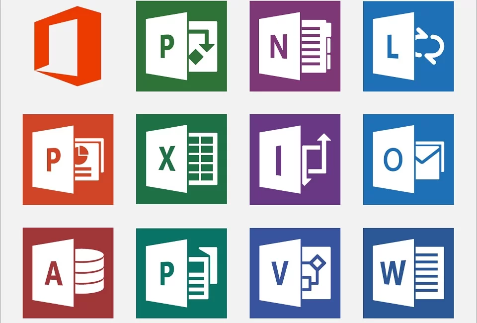

O Microsoft Office é um serviço poderoso que o ajuda a revelar suas melhores ideias, executar tarefas e permanecer conectado em trânsito. Conecte-se para ter uma experiência personalizada e todos os aplicativos do Office mais atuais, com recursos novos e aprimorados sendo adicionados continuamente. Microsoft Word. Microsoft Excel. Microsoft PowerPoint. Microsoft OneNote. Microsoft Outlook. Microsoft Publisher. Microsoft Access. Skype for Business. Esse conjunto inclui programas como o Word, o Excel, o Power Point e o Outlook, cada um com suas funções específicas, como tabelas, planilhas, edição de textos e apresentações. Agora que você já sabe o que é o Pacote Office, que tal conhecer um pouco mais sobre as funções de cada programa da suíte?
